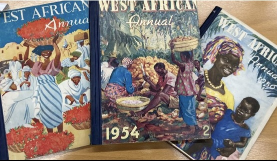

Moment 7
Race, Civilization and Culture
Britain’s imperial power depended as much on forms of cultural dominance as it did military control. Central to this were discourses of race and civilization that at once positioned the British as indelibly superior to those they governed, while at the same time promising paternalistic tutelage towards national self-realisation; empire was to be both a civilizing force and a force of civilization. Racial hierarchies became pivotal in this construction of dominance, but the category of race did not remain stable across the nineteenth and twentieth centuries. Throughout the period multiple and competing understandings were deployed to serve different ends.
Knowledge production has always been central to universities’ raison d’etre and was often put to service in underpinning claims to imperial power. Scholars across the arts and sciences contributed to an ever-growing corpus of research into racial identity and difference. From post-Darwinist evolutionary theories to historians’ accounts of the British race’s imperial expansion, or the science of eugenics to anthropologists’ examination of ‘primitive cultures’, universities functioned as key sites of ‘racial theorising’. King’s was no different to other institutions in this regard: King’s Historians, including F. J. C. Hearnshaw, A. P. Newton, and Sidney Low, celebrated the natural virtues of the British race; the research of King’s linguists, theologians, and law scholars into Asiatic languages, religions, laws, and cultures was used by the colonial state to underpin British control in South Asia; Scientists, such as Reginald Gates, argued that race was a scientific category premised upon essential and irreconcilable difference; while even into the 1970s, Hans Eysenck was undertaking psychological research into differences in natural intelligence between ethnicities. This research will examine the contributions made by King’s scholars to racial science and discourse across this period, examining how ideas were framed and the ways in which they were deployed beyond the university.